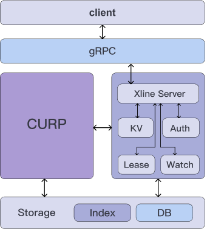

Xline is a high-performance distributed key-value storage engine for multi-cluster. It can provide unified data management for multi-cluster scenarios, making mutual access, discovery, and modification simple and convenient. It also provides KV interface, Multi-Version Concurrency Control and is compatible with etcd and K8S.
Xline is the first geo-distributed consistency management service based on CURP(a WAN consensus protocol, read the paper for more details). It addresses the challenges of convergence and consistency across clouds.
Architecture
An Xline instance consists of the following layers:
-

- Client Layer: Provides a simple and easy-to-use API for clients to use, which can greatly reduce the complexity of using Xline for business. Xline clients in different languages will be implemented in the later release, and currently etcdctl can be used to initiate requests because Xline APIs are compatible with etcd.
- Access Layer: The access layer mainly includes the communication protocol between client to server or server to server. Xline API is based on gRPC protocol.
- CURP Protocol Layer: The CURP protocol layer implements the core algorithm features, such as leader election, log replication, fast-path and slow-path, which are used to ensure data consistency among Xline multi-node and improve service availability. CURP protocol is the cornerstone and highlight of Xline.
- Functional Logic Layer: This layer implements Xline business logic, including the typical KV Server, Auth Server, Lease Server and Watch Server, etc. Client sends requests to Xline Server through the access layer, and Xline Server dispatches the requests to specific servers for execution.
- Storage Layer: This layer contains two components, Index and DB, where Index is based on BTreeMap while DB is mainly responsible for persistent storage of data. At present, Xline is still in the early stage of development, so DB is mainly implemented based on memory. We will introduce persistent storage in the next release.
For more information about the Architecture of Xline, read Xline Architecture Details.
Xline In 5 Minutes
- Download binary from release page.
- Use the following command to start cluster:
- Download or build etcdctl from etcd project.
- Use etcdctl to operate the cluster:
$ ./xline --name node1 --cluster-peers 127.0.0.1:2380 127.0.0.1:2381 --self-ip-port 127.0.0.1:2379 --leader-ip-port 127.0.0.1:2379
$ ./xline --name node2 --cluster-peers 127.0.0.1:2379 127.0.0.1:2381 --self-ip-port 127.0.0.1:2380 --leader-ip-port 127.0.0.1:2379
$ ./xline --name node3 --cluster-peers 127.0.0.1:2379 127.0.0.1:2380 --self-ip-port 127.0.0.1:2381 --leader-ip-port 127.0.0.1:2379
$ etcdctl --endpoints=http://127.0.0.1:2379 put foo bar
$ etcdctl --endpoints=http://127.0.0.1:2379 get foo